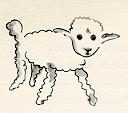
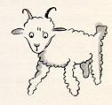
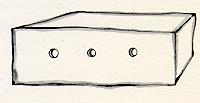

我就这样孤独地生活着，不曾和任何人真正地谈过心，一直到六年前在撒哈拉沙漠发生了那次事故，这种生活才告结束。 我的飞机引擎里有个东西坏了。当时我身边既没有机械师，也没有乘客，我就试图独自完成这个困难的修理工作。 对我来说，这可是个生死攸关的问题，我带的饮水只够用八天了。
第一夜，我就睡在那远离人间烟火十万八千里的荒漠里。我比汪洋大海中的一叶扁舟上的遇难者更感到孤单无援。 而次日黎明时分，当一个奇怪的小声音把我唤醒的时候，你们可以想象，我当时是多么吃惊啊。那小声音说道：
“劳驾……请给我画一只绵羊吧！”
“啊！”
“给我画一只羊……”
我象是受到惊雷轰击一般，一下子就站立起来。我使劲地揉了揉眼睛，仔细 地看了看。我看见一个十分奇怪的小家伙严肃地朝我凝眸望着。 这是后来我给他画出来的最好的一副画像。可是，我的画当然要比他本人的模样逊色得多。这不是我的过错。 六岁时，大人们使我对我的画家生涯失去了勇气，除了画过开着肚皮和闭着肚皮的蟒蛇，后来再没有学过画。

我惊奇地睁大着眼睛看着这突然出现的小家伙。你们不要忘记，我当时处在远离人烟千里之外的地方。 而这个小家伙给我的印象是，他既不象迷了路的样子， 也没有半点疲乏、饥渴、惧怕的神情。 他丝毫不象是一个迷失在旷无人烟的大沙 漠中的孩子。当我在惊讶之中终于又能说出话来的时候，对他说道：
“唉，你在这儿干什么？”
可是他却不慌不忙地好象有一件重要的事一般，对我重复地说道：
“请……给我画一只羊……”
当一种神秘的东西把你镇住的时候，你是不敢不听从它的支配的，在这旷无 人烟的沙漠上， 面临死亡的危险的情况下，尽管这样的举动使我感到十分荒诞， 我还是掏出了一张纸和一支钢笔。 这时我却又记起，我只学过地理、历史、算术 和语法，就有点不大高兴地对小家伙说我不会画画。他回答我说：
“没有关系，给我画一只羊吧！”
因为我从来没有画过羊，我就给他重画我所仅仅会画的两副画中的那副闭着 肚皮的巨蟒。
“不，不！我不要蟒蛇，它肚子里还有一头象。”
我听了他的话，简直目瞪口呆。他接着说：“巨蟒这东西太危险，大象又太 占地方。 我住的地方非常小，我需要一只羊。给我画一只羊吧。”
我就给他画了。

他专心地看着，随后又说：
“我不要，这只羊已经病得很重了。给我重新画一只。”
我又画了起来。

我的这位朋友天真可爱地笑了，并且客气地拒绝道：“你看，你画的不是小羊，是头公羊，还有犄角呢。”
于是我又重新画了一张。

这副画同前几副一样又被拒绝了。
“这一只太老了。我想要一只能活得长的羊。”
我不耐烦了。因为我急于要检修发动机，于是就草草画了这张画，并且匆匆 地对他说道：

“这是一只箱子，你要的羊就在里面。”
这时我十分惊奇地看到我的这位小评判员喜笑颜开。他说：
“这正是我想要的，……你说这只羊需要很多草吗？”
“为什么问这个呢？”
“因为我那里地方非常小……”
“我给你画的是一只很小的小羊，地方小也够喂养它的。”
他把脑袋靠近这张画。
“并不象你说的那么小……瞧！它睡着了……”
就这样，我认识了小王子。